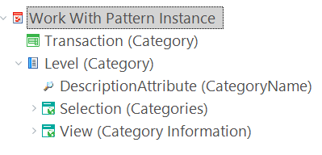
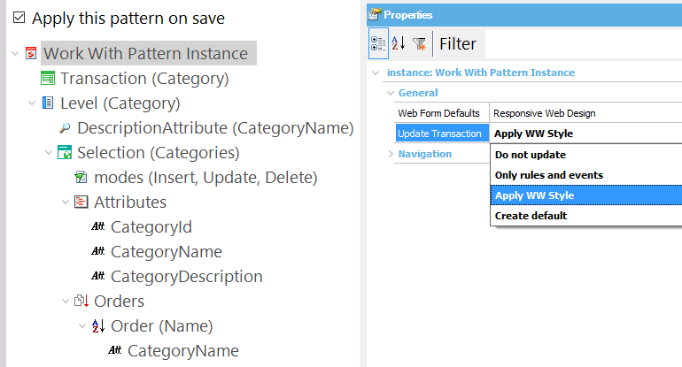
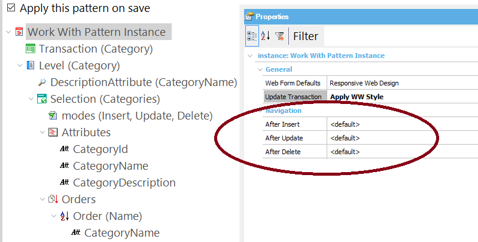
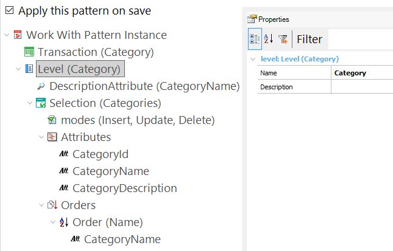

The Work With for Web Pattern features the following:
The Web Form Defaults property should be set to RWD. Otherwise, check the compatibility notes below.
This Work With Pattern will generate the following objects for each selected Transaction:
It's a Web Panel with a grid that lists all the records in a table and includes the following features:
- Paging
- Conditional Filters
- Multiple Orders
- Control Info for Filter Attributes
- Standard Actions
- Export to Excel
- Save Grid State
It's a Web Panel that shows all the information of a record that has been selected in the grid of a Work With Web Panel. It shows the record's data in a tab, and also shows one tab for each subordinated table, containing a grid with the related information.
Optional Features
- Context management
- Object level security
The Pattern Settings define all the parameters that are needed to create an instance of the Work With pattern (for example, what attributes will be used in the Work With Form, etc.). While it is very straightforward and can be used intuitively, in this section you are able configure all of its nodes.

It has the following attributes (accessed from the Properties window):

Update Transaction property. As you have seen, the Work With pattern creates from one Transaction (or any number of Transactions you want) all the objects needed to obtain a web application. But in order to fully implement the pattern, besides generating new objects the Transactions involved must comply with a number of definitions: they must have the same look and feel like the other objects, they must include a parm rule, etc. These changes are applied to the Transactions by the pattern itself, so that you do not have to do it manually, and to make sure that all the necessary conditions will be complied.
The changes to be made to the Transactions involved are:
- Applying the Theme to the Transaction form
- Associating the Header and Footer Web Components to the Transaction Web form
- Modifying or adding the parm rule, depending on the Pattern configuration
- Adding the After Transaction event with the code required to call the Transaction Controller
The Update Transaction property offers the following values so that you can decide what to do:
- Do not update: If you select this value, the Transaction won't be modified (web form, rules and events are kept).
- Only rules and events: If you select this value, only rules and events are modified, but not the web form.
- Apply WW Style (default value): If you select this value, the first time the pattern is applied to the Transaction its behavior will be the same as it would be if you selected the Create Default value. The next time it is selected, the header, footer and buttons in the web form will be changed, but not the Data Area. Rules and events will also be modified.
- Create default: If you select this value, the web form, rules and events will be modified.
Note that the order of the values available is such that each subsequent one offers the possibility of introducing an additional change in the Transaction.
Navigation Group
This group has the following properties:

- AfterInsert
- AfterUpdate
- AfterDelete
These properties allow you to set the form you want to go to after making an insertion, an update or a deletion, respectively.
For each of these properties, there is a combo box which offers the following values: <default>,<return to caller>,<go to view>,<go to selection>.
The instance file will have one Level node for each Transaction level.

Each of these nodes has the following properties:
- Name. The default value of this property is the level's base table.
- Description. Describes the node.
And the following sub-nodes:
It defines the Transaction's Description Attribute property. Description Attribute can be configured in GeneXus.
Since this attribute will have a link, it can only be an Edit type attribute (that is, it cannot be a Combo or checkbox).
See Selection Node
See View Node
By default this pattern generates the following objects:
For compatibility reasons, the Work With pattern template generates different layouts depending on the Theme configured in the Default Theme property.
Setting the Work With Pattern to see what the general settings related to all instances are.
Check LightCRM sample for a RWD implementation of this pattern.
|